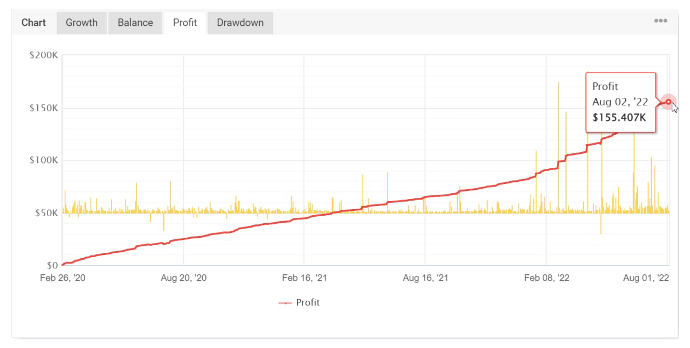

How Can Forex Trading Bot Be so Profitable?
USEFUL TIP:
-
The popularity of robot trading has skyrocketed recently.
-
Reasons for using robots in financial markets.
-
Find the best trading style and preferences.
In recent years, forex trading became extremely popular among those who want to have Financial Freedom or secondary income. According to statistics, 68% of traders lost. The problem here is that none of them can trade but still feels confident or lucky enough to outpace the market. There are many solutions in ways to make profits from trading that are proven to work with track record.
That is why the popularity of robot trading has skyrocketed recently. Today, the use of automated trading is becoming more and more widespread. Indeed, the average monthly return from automated trading is 20-30%+. So, by investing $5000 in robot trading, you can get up to $8450+ on your account in two months. So, how can you benefit from the forex market against all the odds? Keep on reading to find out
Why Use Forex Trading Robots?
A forex trading robot, or bot, can be programmed to trade constantly, 24 hours a day, seven days a week. Most of these robots are built with MetaTrader, using the MQL scripting language, which lets traders generate trading signals or place orders, and manage trades. Forex​ robots are designed to remove the psychological element of trading, which can be detrimental for humans.But the most common reason there emotional impact and profitability of trading.
How Can You Benefit from Forex Robot?
Some robots, like SpyFx, may be a Some robots, like SpyFx, may be a perfect solution Some robots, like SpyFx, may be a for everyone who has no sufficient knowledge and skills to trade profitably but still want to take advantage of the currency pairs fluctuations. Here traders can choose one of the options depending on the balance, trading style, or any other preferences.

This image shows the prophet of the last six months of 2022
The company (Spyfx) has a proven track record of its software performance, showing monthly profitability. For example, last month the bots brought 130.61% profit, meaning that if you have invested $1000 in this EAat the being of the month, your profit would have been $1306.10 by the end of the month. Six years of successful work have demonstrated the reliability of the software and the software itself. Try it out yourself and indulge in the benefits of profitable automated trading. Just last year the SpyFx team managed over 2000 new clients and managed 12.3 million in client's funds, the bots total profit gain was + 1,022.7%
To make the most out of the price fluctuations while getting secondary income, sign up below.
High Profitabile Bot for FREE!!